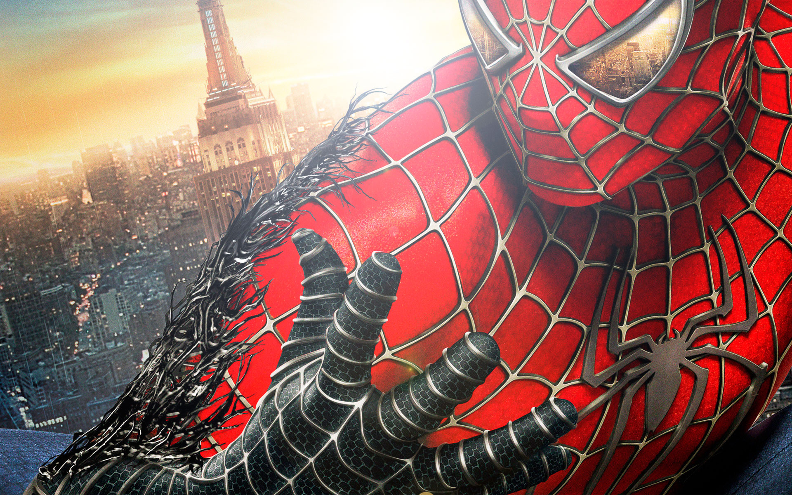
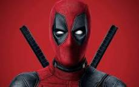
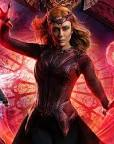
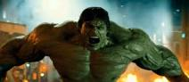
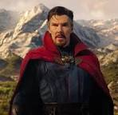

Spider-Man, traducido en ocasiones como el Hombre Araña, es un personaje creado por los estadounidenses Stan Lee y Steve Ditko, e introducido en el cómic Amazing Fantasy n.° 15, publicado por Marvel Comics en agosto de 1962
Wade Winston Wilson, más conocido como Deadpool, es un personaje ficticio, mercenario, supervillano y antihéroe, que aparece en los cómics publicados por Marvel Comics. Creado por el artista Rob Liefeld y el escritor Fabian Nicieza, Deadpool apareció por primera vez en New Mutants #98
Wanda Maximoff es una superheroína ficticia que aparece en los cómics publicados por Marvel Comics. Apareció por primera vez en X-Men #4 y fue creada por Stan Lee y Jack Kirby, debutando en la denominada Edad de Plata de los Cómics.
Hulk es un personaje ficticio, un superhéroe que aparece en los cómics e stadounidenses publicados por la editorial Marvel Comics, es considerado el personaje más fuerte de Marvel Comics
Después de sufrir un accidente, un brillante y arrogante cirujano busca rehabilitarse mediante técnicas alternativas. Sus intentos le llevan a descubrir que ha sido designado para encabezar la lucha contra una fuerza oscura y sobrenatural.
